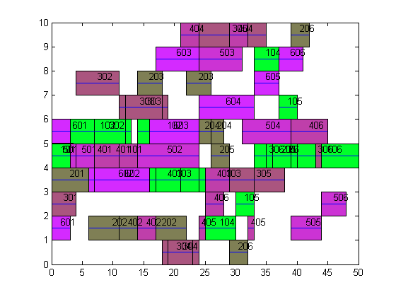

Contents
清空环境
clc;clear;clf
tic
下载数据
load scheduleData Jm T JmNumber
基本参数
NIND=40;
MAXGEN=50;
GGAP=0.9;
XOVR=0.8;
MUTR=0.6;
gen=0;
[PNumber, MNumber]=size(Jm);
trace=zeros(2, MAXGEN);
WNumber=PNumber*MNumber;
初始化
Number=zeros(1,PNumber);
for i=1:PNumber
Number(i)=MNumber;
end
Chrom=zeros(NIND,2*WNumber);
for j=1:NIND
WPNumberTemp=Number;
for i=1:WNumber
val=unidrnd(PNumber);
while WPNumberTemp(val)==0
val=unidrnd(PNumber);
end
Chrom(j,i)= val;
WPNumberTemp(val)=WPNumberTemp(val)-1;
Temp=Jm{val,MNumber-WPNumberTemp(val)};
SizeTemp=length(Temp);
Chrom(j,i+WNumber)= unidrnd(SizeTemp);
end
end
[PVal, ObjV, P, S]=cal(Chrom,JmNumber,T,Jm);
循环寻找
while gen<MAXGEN
FitnV=ranking(ObjV);
SelCh=select('rws', Chrom, FitnV, GGAP);
SelCh=across(SelCh,XOVR,Jm,T);
SelCh=aberranceJm(SelCh,MUTR,Jm,T);
[PVal, ObjVSel P S]=cal(SelCh,JmNumber,T,Jm);
[Chrom ObjV] =reins(Chrom, SelCh,1, 1, ObjV, ObjVSel);
gen=gen+1;
trace(1, gen)=min(ObjV);
trace(2, gen)=mean(ObjV);
if gen==1
Val1=PVal;
Val2=P;
MinVal=min(ObjV);
STemp=S;
end
if MinVal> trace(1,gen)
Val1=PVal;
Val2=P;
MinVal=trace(1,gen);
STemp=S;
end
end
PVal=Val1;
P=Val2 ;
S=STemp;
描绘解的变化
figure(1)
plot(trace(1,:));
hold on;
plot(trace(2,:),'-.');grid;
legend('解的变化','种群均值的变化');

显示最优解
figure(2);
MP=S(1,PNumber*MNumber+1:PNumber*MNumber*2);
for i=1:WNumber
val= P(1,i);
a=(mod(val,100));
b=((val-a)/100);
Temp=Jm{b,a};
mText=Temp(MP(1,i));
x1=PVal(1,i);
x2=PVal(2,i);
y1=mText-1;
y2=mText;
plotRec(x1,x2,mText);
plotRec(PVal(1,i),PVal(2,i),mText);
hold on;
fill([x1,x2,x2,x1],[y1,y1,y2,y2],[1-1/b,1/b,b/PNumber]);
text((x1+x2)/2,mText-0.25,num2str(P(i)));
end
toc
Elapsed time is 2.849064 seconds.
